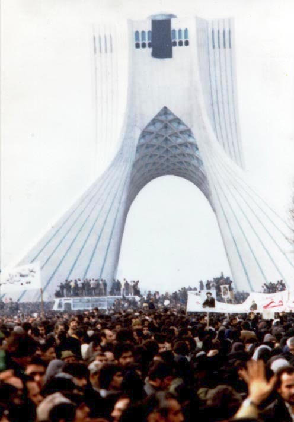

1979–1991
1979–1991: Revolution, Regional War, and Kuwait
28Iranian Revolution, 1979
Opposition was building against the regime of the Shah on account of dissatisfaction regarding political repression, inequalities, corruption, foreign interventions, and the repercussions of the process of modernization. Protests and strikes were increasing in 1978. The Shah left Iran in January 1979, and Khomeini returned to Iran in February 1979. As a result, the monarchy was overthrown. Support of the Shah by the U.S. Army and diplomacy made the U.S. government part of the old regime. The 1953 coup was a part of the politics of foreign intervention and was not the only factor behind the revolution.

In this case, it becomes clear that there can be a strategically valuable government without any legitimacy. At the same time, support from the United States would not guarantee stability.
29Hostage crisis, 1979–1981
Iranian students took over the American Embassy in Tehran on November 4, 1979 due to the entry of the Shah to the US due to medical treatment. The incident ended after 444 days, when Jimmy Carter left the presidency, on January 20, 1981. Detention of American officials at the embassy was against international norms regarding embassies. To Americans, it was a significant security challenge, while to the revolutionaries, the US presence there represented an influence. It is important to note that the explanation of reasons does not condone the hostage taking.
30Carter Doctrine, 1980
The United States, following the invasion of Afghanistan by the Soviets in December 1979, saw Carter assert in January 1980 that any external domination of the Persian Gulf would pose danger to vital U.S. interests, which can only be repelled through the use of military power. The doctrine made a connection between the strategic geography and political order of the Persian Gulf and the national security of the U.S. Defending from domination and safeguarding American interests were now intertwined. Afghanistan is part of the wider strategic landscape.
31Iran–Iraq War, 1980–1988
The invasion of Iraq against Iran occurred in September 1980 with the intention of exploiting the revolution and achieving some advantages. The eight-year war between the two nations brought massive casualties, including the usage of missiles, attacks at sea and Iraq using chemical weapons. The United States was concerned about the influence of Iran’s revolution, Iraq’s expansion, the regional balance of power and the petroleum routes. The U.S. adopted various measures that showed a tilt towards Iraq while the secret arrangement of selling arms in Iran–Contra also showed some divisions in U.S. foreign policy. The objective of stopping one nation from dominating the Gulf made it difficult to practice politics based on values.
32Iraq invades Kuwait, August 2, 1990
Iraq’s invasion followed disputes over debt, oil output, and territory. Iraqi forces occupied Kuwait and subsequently declared annexation. The UN Security Council adopted Resolution 660 condemning the invasion and demanding immediate withdrawal. The United States assembled a multinational coalition including Arab states, while Saudi Arabia hosted forces for Operation Desert Shield. This was an invasion of an internationally recognized sovereign state, sharply different from Iran’s domestic crisis in 1953.
33Desert Shield and Desert Storm, 1990–1991
The United States military entered Saudi Arabia to prevent any further expansion of Iraqi troops, while economic sanctions and diplomatic means were used to compel them to withdraw from the region. Security Council Resolution 678 gave permission to use force against Iraq only in certain conditions before 15 January 1991. Coalition’s air raids started in January and ground operation took place in February. Kuwait was freed on 28 February. The U.S. had a number of objectives such as sovereignty restoration, non-aggression stance, security of Saudi Arabia and blocking the Iraqi consolidation of regional power which could complement each other.

First of all, Kuwait was a monarchy and restoring territorial sovereignty of the country would not have made its political system democratic. Besides, the coalition led to military, civilian and environmental destruction.
34The core comparison: Iran 1953 and Kuwait 1991
Iran 1953: The United States was involved in the overthrow of a Prime Minister amid a constitutional crisis.

Kuwait 1991: A coalition effort led by the United States reversed a case of interstate aggression by securing the sovereignty of an invaded country for the purposes of advancing U.S. interests. While there were differences between the two cases with regard to their justification and magnitude, the relevance of both is not in their similarity but in demonstrating that national interests can justify intervention against self-government within a state or defense of state sovereignty.